TMOSI
point-and-click adventure for the New South Wales school curriculum
TODO
- some footage from the finished game w/ backgrounds n stuff
- link to this https://campaignbrief.com/marketforce-gamelab-launches-with-life-saving-allergy-game-for-national-allergy-council/
Character
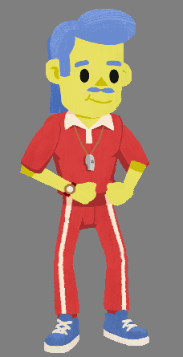
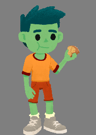
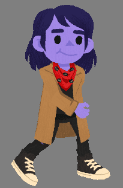
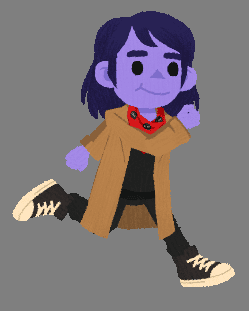
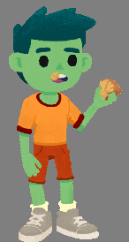
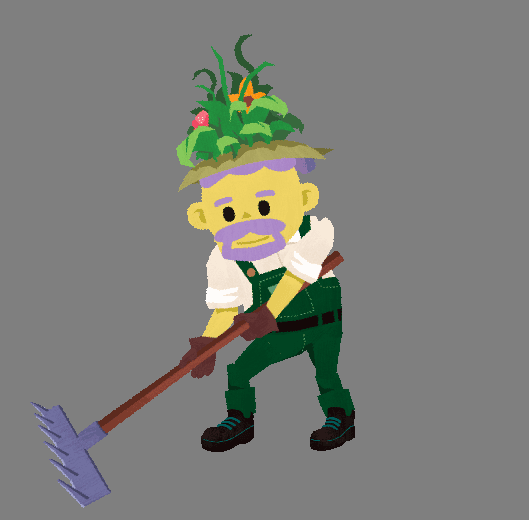
Using Spine 2D's Skins feature and per-Skin transform constraints, differently proportioned characters could use the same rig. Except for Professor Pounce.
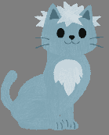
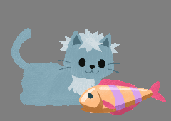
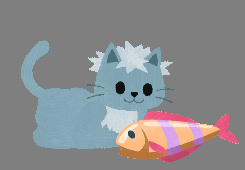
Kid Detective, the player character, could earn clothing items throughout the game that could be worn together to create unique costumes. Skins were used here too.
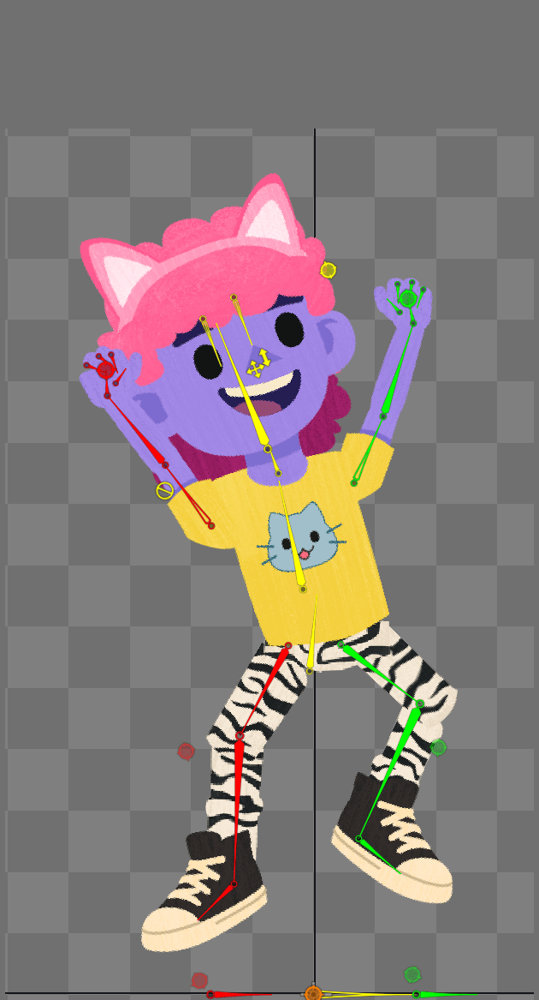
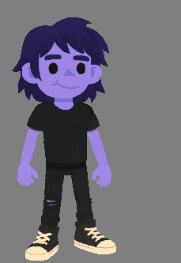
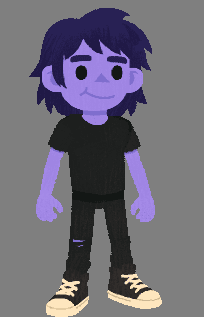
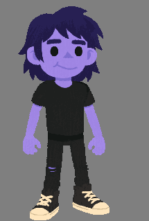
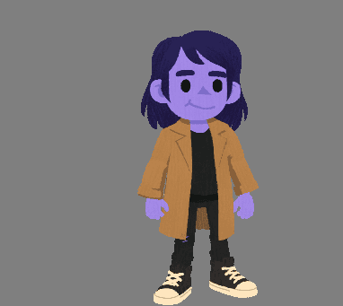
Some characters had to be seen from behind, or only from behind. A layered approach made creating back-facing animations easier.
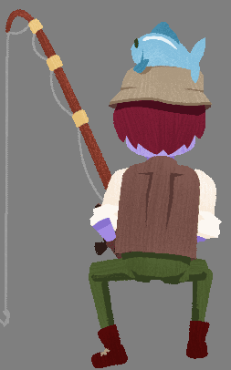
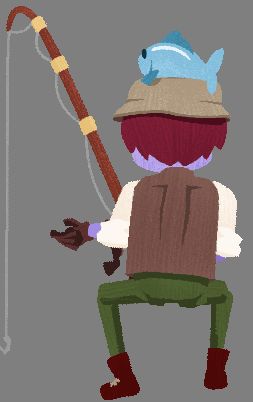
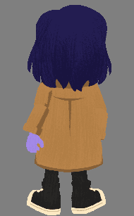
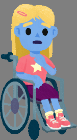
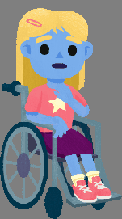
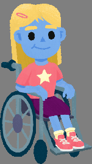
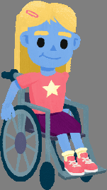
Environment
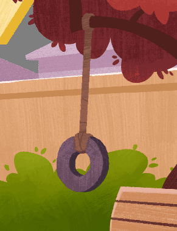